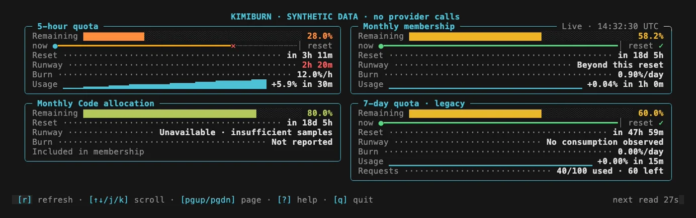

Will your Kimi Code quota last until the reset?
Kimiburn is a read-only terminal monitor for Kimi Code membership quotas. It shows the rolling 5-hour window, the monthly membership, and a local runway estimate for each — on one line that puts the depletion point next to the reset.
Install Kimiburn View on GitHub
Try it without a token: kimiburn demo renders the dashboard on synthetic data.
Terminal preview

kimiburn demo — synthetic example data, no real account figures.Features
-
Every quota on one screen
The rolling 5-hour quota, the shared monthly membership, the monthly Code allocation when reported, and a legacy 7-day quota when the API returns one.
-
Runway against the reset
A
now ●━━━✕┄┄│ resettimeline per quota: ✕ marks the estimated depletion, andreset ✓means the quota outlasts the window. -
Meters that read at a glance
Remaining quota is drawn from green through amber to red, animating to each new reading, with live countdowns to every reset.
-
Usage trend
A sparkline of the locally retained readings of the current reset period — the same samples the runway estimate is fitted to.
-
Built on Charm v2
Help and key bubbles drive the footer and a ? help popup — Esc closes it. Mouse-wheel scrolling, a refresh spinner, and colours that follow your terminal's light or dark theme.
-
In your terminal tab
The tab title carries the 5-hour quota and runway. In Ghostty, WezTerm, and Windows Terminal the quota also shows as the terminal's own progress indicator.
-
Offline cache
The last good reading renders immediately on startup, labelled as cached with its age, and failed reads never erase it.
-
Scriptable
kimiburn --jsonprints one versioned document with normalized quotas, runway values, warnings, and the raw provider object.
Installation
Homebrew (macOS and Linux)
brew tap acevedomiguel/kimiburn
brew install --cask kimiburn
kimiburn --versionThe cask installs a prebuilt binary. Because the tap is a third-party tap, Homebrew asks you
to trust it once with brew trust acevedomiguel/kimiburn.
Go
go install github.com/acevedomiguel/kimiburn/cmd/kimiburn@latestPrebuilt binaries
Every release publishes Linux, macOS, and Windows archives plus a checksums.txt
on the GitHub Releases page.
Verify a download with sha256sum -c checksums.txt --ignore-missing.
Quick start
Kimiburn needs a Kimi Code token, supplied explicitly — it never imports credentials from another application. Run:
kimiburn setup # hidden prompt, validates the token, stores it
kimiburn # open the dashboardRunning kimiburn without a token starts setup automatically and then opens the
dashboard. Setup validates the token with one live usage request before storing it in the OS
keyring, or in a permission-restricted fallback file when the keyring is unavailable. For a
non-interactive process, set KIMIBURN_TOKEN instead.
The dashboard refreshes every 30 seconds by default, which is also the minimum; set
refresh_interval to a longer duration, or to 0 for manual refresh
only. Print the configuration path with kimiburn config path.
Understanding the runway
Runway answers “at the current burn rate, when does this quota run out?” It is calculated on your machine, not supplied by Kimi, and it is an estimate, not a guarantee.
On a first read, Kimiburn estimates the average burn from the reported ratio and the elapsed part of the current window. After at least five local samples spanning two minutes, it fits the observed trend instead. A reset or a falling ratio clears only that quota's history, and forecasts never cross a reset:
| Situation | Displayed |
|---|---|
| Runs out before the reset | A duration such as 2h 20m, and ✕ on the timeline |
| Lasts past the reset | Beyond this reset, and reset ✓ |
| No usage observed | No consumption observed |
| Quota fully used | Depleted |
| Too few readings | Unavailable · insufficient samples |
The monthly Code allocation is part of the shared monthly membership, not an extra allowance; the two are never added together.
Security and privacy
- This website is static. It never sees, requests, or transmits your Kimi token or account data — the application is separate and runs entirely on your machine.
- Kimiburn reads only
GET /usageson the Kimi Code API base you select, and never falls back to another host or to Moonshot Open Platform. - Tokens are never written to the cache or to JSON output, and errors redact configured credentials before display.
- Kimiburn only reads data: no inference traffic, no quota changes, no token creation, rotation, or revocation.
To report a vulnerability, see SECURITY.md.
FAQ
Is Kimiburn affiliated with Kimi or Moonshot AI?
No. Kimiburn is an independent open-source project and is not an official Kimi client.
Does this website see my token?
No. The site is static pages served by GitHub Pages. It has no forms, no scripts that make network requests, and no credential flow of any kind.
Why does it say “insufficient samples”?
The sample-based estimate needs five readings over at least two minutes of the current reset period. Leave the dashboard open for a couple of refreshes and the runway appears.
Can I see absolute request or token counts?
Only when the API reports them. Ratio-only responses cannot reveal absolute amounts, and Kimiburn labels missing values instead of inventing plausible numbers.
Can I use it without Homebrew?
Yes. Install with go install or download a prebuilt archive from the
releases page.
Also on OpenRouter?
RouteBurn is Kimiburn's sibling: the same read-only terminal dashboard idea for OpenRouter credits — the remaining balance, the last 30 days of spend, and how long the balance lasts at the current burn rate.
Open source and contributing
Kimiburn is open source under the MIT license. Contributions are welcome — start with CONTRIBUTING.md and browse the issue tracker before opening a pull request. Release notes live on the releases page.